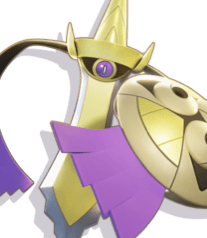

Puedes disfrutar del mejor contenido para adultos de Pokémon UNITE sin coste alguno, pero existen algunos elementos de pago, como las gemas Æos, una de las monedas del juego

¿Cómo puedo transferir el acceso a mis datos de guardado de Pokémon UNITE de un dispositivo iOS a uno Android?
Para poder transferir el acceso a tus datos de guardado de un dispositivo iOS a uno Android, primero tendrás que vincular tu cuenta de Pokémon UNITE en iOS con una de estas plataformas.
Cuenta Nintendo
Cuenta del Club de Entrenadores Pokémon
Cuenta de Google
Cuenta de Facebook
Una vez vinculado el juego con una de ellas, puedes descargar Pokémon UNITE en tu dispositivo Android y seguir los pasos que encontrarás en este artículo.
¿Cómo funciona el Desafío para principiantes en Pokémon UNITE? ¿Cómo reclamo mis recompensas?
Para obtener las recompensas del Desafío para principiantes (como la Licencia Crustle Unite), debes completar todos los Desafíos elegibles. Después de completar los Desafíos, puedes recibir las recompensas seleccionando Reclamar. Asegúrate de reclamar tus recompensas antes de que termine el Desafío para principiantes, de lo contrario, no podrás recibir las recompensas.
¿Cómo se usan las gemas Æos en Pokémon UNITE?
Las gemas Æos de Pokémon UNITE no se pueden usar sin el permiso del jugador. Estas pueden emplearse para conseguir algunos objetos directamente. Además, las gemas Æos pueden utilizarse de la siguiente manera:
Para conseguir objetos intercambiando cupones Æos en el Bazar Æos. Si un jugador no tiene suficientes cupones Æos para completar la transacción, se le dará la opción de cubrir la diferencia con gemas Æos.
Si el jugador tiene un pase de combate prémium o un pase de combate prémium plus, tendrá la opción de usar gemas Æos para subir el nivel de pase de combate.
¿Por qué no puedo conseguir más monedas Æos en Pokémon UNITE?
Las monedas Æos son una de las monedas del juego en Pokémon UNITE. Ten en cuenta la siguiente información sobre las monedas Æos:
Se puede obtener un máximo de 2100 monedas Æos a la semana por participar en combates.
No hay ningún objeto que permita aumentar el límite de monedas Æos que se puede conseguir por semana.
La cantidad de monedas Æos se restablece cada lunes a las 00:00 UTC.
¿Cómo puedo activar el chat de voz en la versión de Pokémon UNITE para Nintendo Switch?
Para poder usar el chat de voz en Pokémon UNITE, debes alcanzar el Nv. 6 de Entrenador y participar en un combate con otros jugadores. Sigue estos pasos para activar el chat de voz:
Usa unos auriculares que sean compatibles con tu consola Nintendo Switch.
Abre Pokémon UNITE e inicia un combate.
Una vez que comience el encuentro, pulsa el botón + para abrir el menú del juego.
Después, pulsa el botón - para acceder a los ajustes.
Busca la opción Ajustes del chat de voz.
Para poder oír a los otros jugadores, selecciona Sí para la opción Recepción.
Para poder usar la función del chat de voz, deberás aceptar los términos de uso para el chat antes de activarlo por primera vez. Pulsa el botón X para aceptar y continuar.
Si quieres oír solo a jugadores a los que has invitado, selecciona Conocidos en la opción Rango receptor. Si seleccionas Todos, podrás oír a todo el equipo.
Si quieres que los otros jugadores puedan oírte, selecciona Sí para la opción Emisión.
Si quieres que te oigan solo jugadores a los que has invitado, selecciona Conocidos en la opción Rango emisor. Si seleccionas Todos, todos los jugadores del equipo podrán oírte.
¿Cuáles son los requisitos de sistema para jugar a Pokémon UNITE?
Android
Android 5.0 (API nivel 21) o posterior
Procesador: Octa-core 1.8 GHz o superior
Memoria: 3 GB RAM
Gráficos: Adreno 506 o superior
iOS
iOS 12.0 o posterior
Procesador: A9 o superior
Memoria: 2 GB RAM
¿Hay diferencias entre las versiones de Pokémon UNITE para Nintendo Switch y para dispositivos móviles?
No. En lo que respecta al sistema de juego, no hay diferencias entre ambas versiones. Sin embargo, el tipo de cuenta que se puede vincular con cada una es distinto.
¿Cuánto dura una membresía Unite?
La membresía Unite dura un mes a partir del día en que se activa.